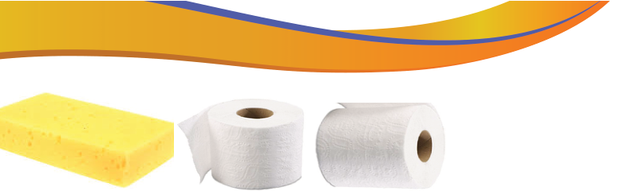
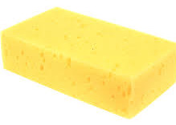
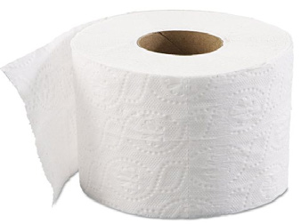
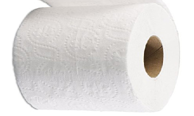

Figure 3.3: A sponge and paper towels
Handling painting materials and equipment
Painting materials and equipment require proper handling for general safety. Several rules need to be observed wherever one has painting materials and equipment. The following general rules and procedures should be adhered to for the safety of materials, equipment and user or artist:
Artists should read user guides on art materials and equipment labels carefully before using them for the first time.
Warnings and precautions on painting materials and equipment labels should be strictly observed.
Paint containers and tubes should be tightly covered when not in use.
All material containers must be labelled. For example, solvent containers should be labelled to avoid confusion in use. If the water container is not labelled it can easily be confused with other odourless and colourless solvents.
Brushes and other art equipment should be properly cleaned, dried and kept in their cases instead of leaving them with paint or soaked in a solvent container after use. This is due to the following reasons: It helps to maintain the quality of the equipment and prolong its lifespan. It prevents the build-up of paint, ink, or other materials that can cause damage to the equipment overtime, it helps to prevent contamination of the materials used in the artwork.

Activity 3.1
(a) Make a study tour to a nearby fine art gallery and identify painting materials and equipment used to make the artworks found in the gallery.
(b) Collect any used painting materials and demonstrate the proper ways of handling them to ensure safety and cleanliness.